Overview
We Once Ate the Sun
公元 6104 年，一位不需要进食的非人类档案员，试图理解人类为什么吃、为什么烹饪，又为什么愿意把食物交给另一个生命。故事从物质与能量的解释，走向味道、分享与照料。
人类通过摄取世界维持生命，
却通过分享世界创造关系。
The Challenge
不同镜头，如何属于同一个世界？
逐镜生成后，角色与场景的一致性、物体尺度、接触承重、动作衔接与声画一致，都需要逐项检查。即使两张图的灰墙、光向和材质相同，蚂蚁所在的位置也可能已经变了。
用同一条裂缝，检查镜头之间的空间。

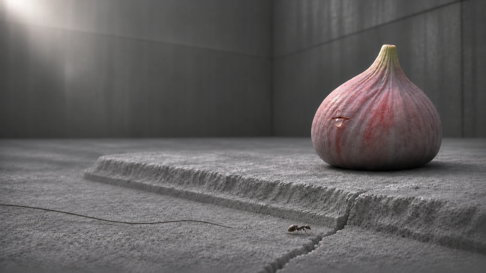
这组对照说明的是关键帧的空间修订；动作意图与动态衔接仍需在视频中复核。
Creative Decisions
让陌生的身体，也能表达给予。
造型需要让探测、接触与承托变得可读。早期比较柔性膜体与矿物层体，之后探索由矿粒组成的触索，让同一个身体能够观察果实，也能够把果实交给另一个生命。
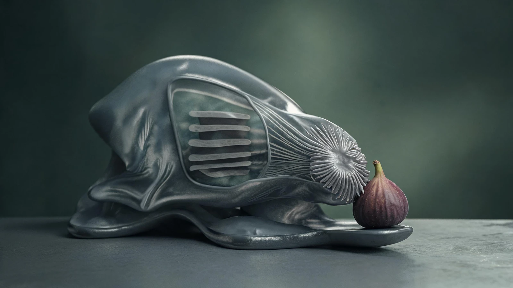

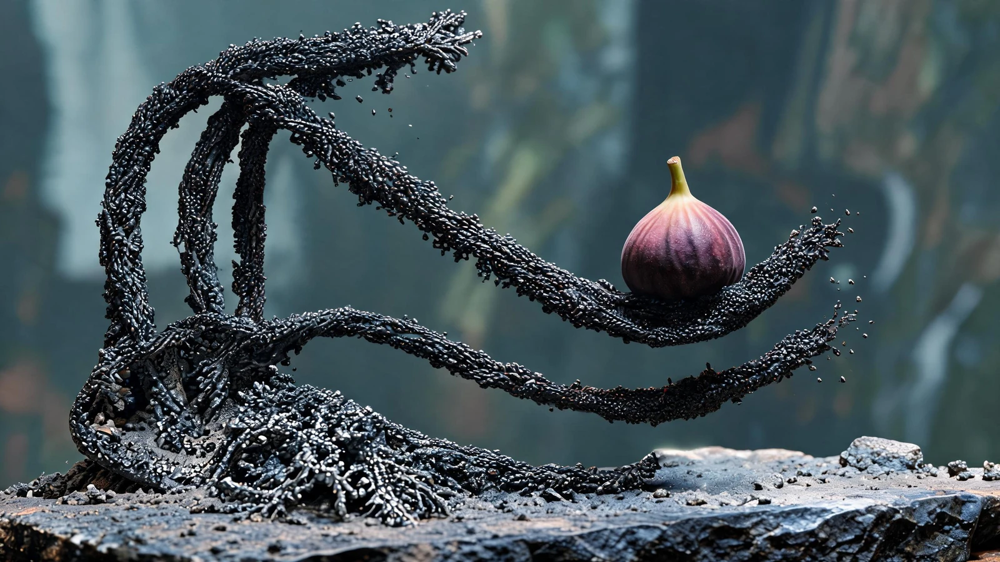
以上为不同阶段的角色探索稿。后续镜头继续收敛材质、空间和尺度，并不把探索稿当作成片静帧。
Production Workflow
从故事到交付的五个环节。
以分镜确定动作顺序，在 TapNow 中按镜号组织参考图、首尾帧与视频。确认静帧后生成，再回看真实运动与声音；有效片段进入剪辑，NG 与修改依据另行保留。
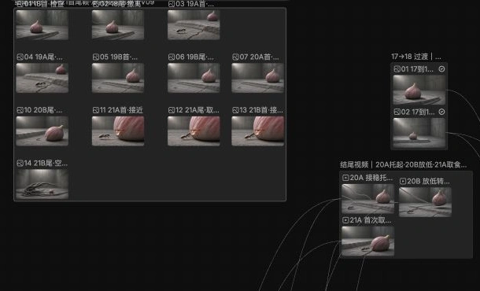
先约束首尾，再检查中间发生了什么。

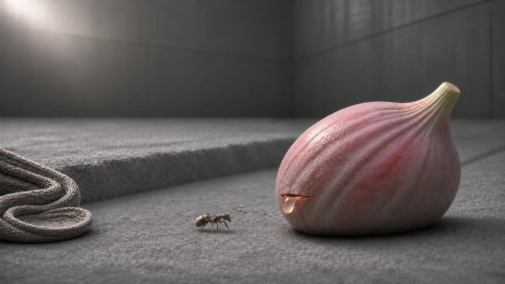
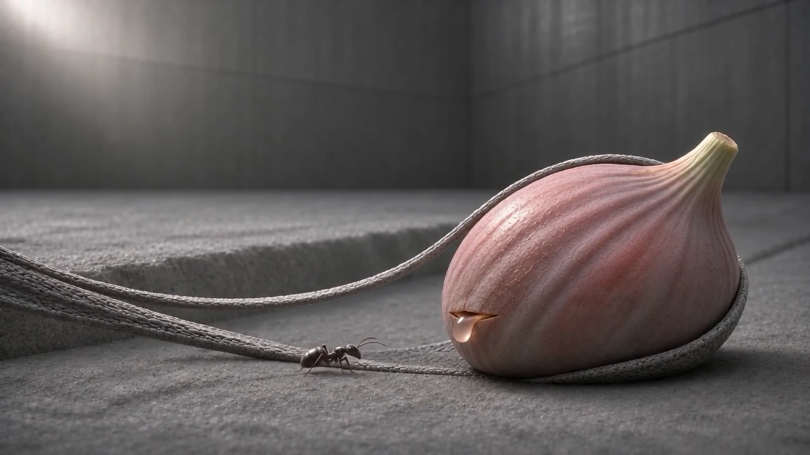
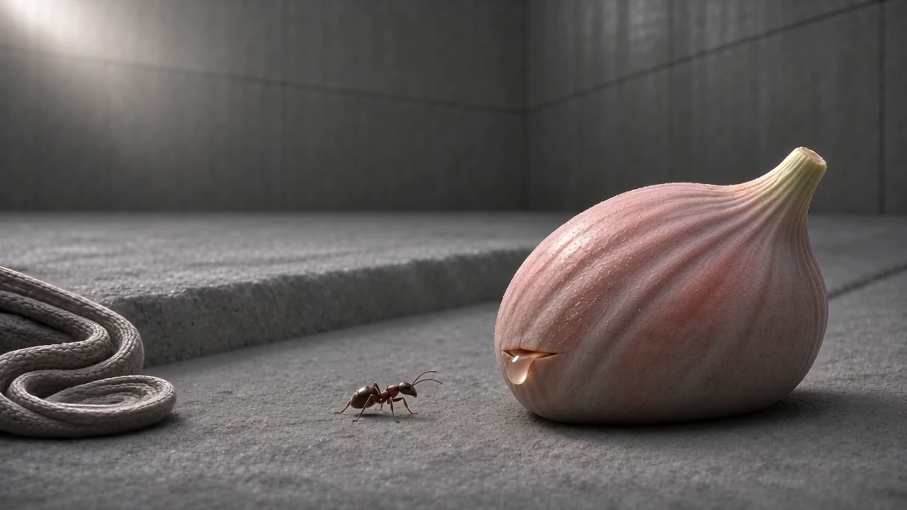
Deliverables
成片之外，保留可以复盘的过程。
当前已有约 3 分 42 秒的完整影片版本、60 秒预告和 8 张剧照。这里选取真实视频画面，呈现从未来遗迹到人类生活，再回到档案员行动的视觉线索。

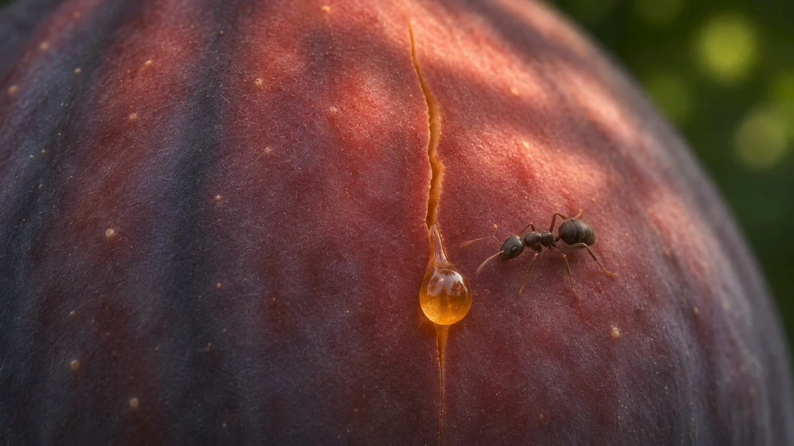
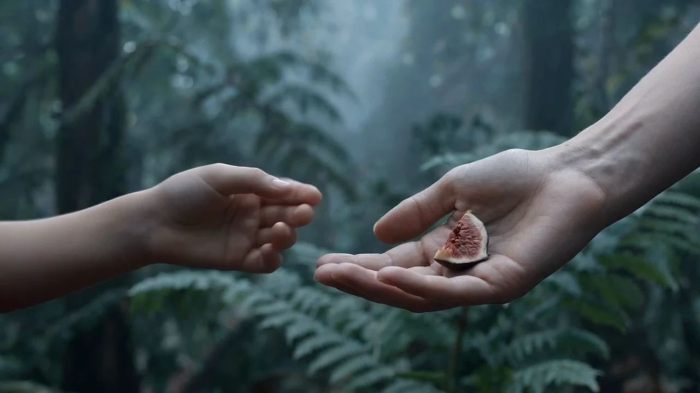

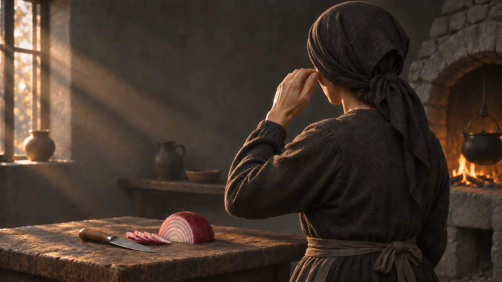

剧照保留原画面比例与色彩；原始镜头时码与整片时码分别标注。点击图片可放大查看。
Reflection & Scope
哪些交给模型，哪些需要逐镜盯住。
最需要创作者判断的，是动作是否传达了故事：先接稳再松开、先看见困难再给予、让后一个镜头接住前一个镜头的结果。生成之后，我把问题定位到具体镜头，再通过关键帧、动作拆分和局部返工逐步修正。
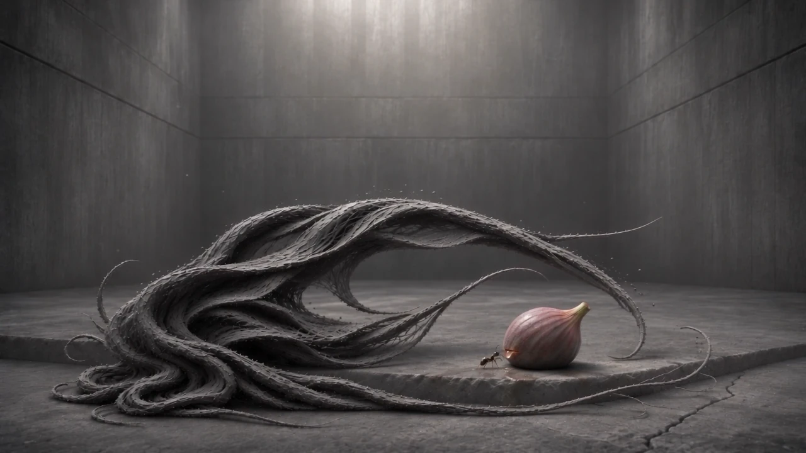